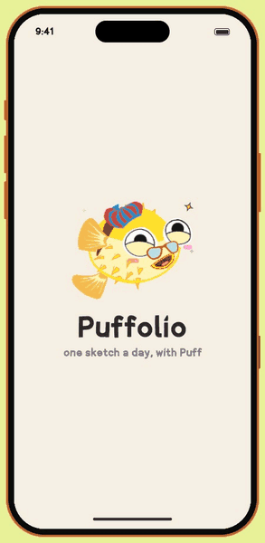
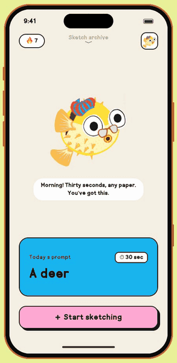
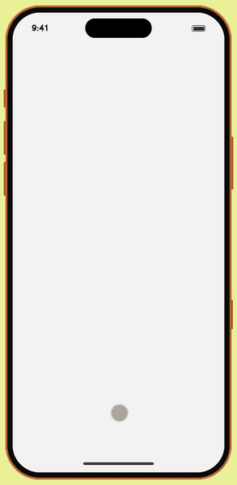
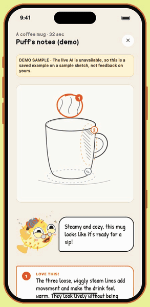
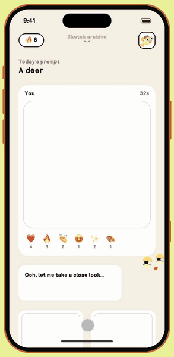
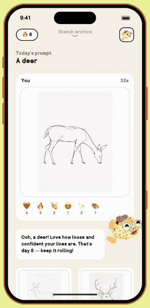

Self-directed project · Team of 4 · 6 hours
Puffolio
Context
Puffolio is an iPhone app that builds a daily drawing habit. Every day you get one prompt and a short timer, sketch it on any paper, and scan it in. Puff, a pufferfish mascot, tells you what you did well, and your sketch lands in a feed with your friends’ takes on the same prompt.
This was a self-directed project. Four of us, as team O Deer, designed and built it within six hours: we drew a typeface, rigged a mascot with nineteen expressions, and shipped a working app to our own phones. I built the pitch deck and shaped the story we told with it.
The problem
Almost everyone says they wish they drew more, and almost nobody does. A blank page gives you no reason to start today. Art communities rank, score and compare, so one harsh comment is enough for a beginner to stop posting. And sketches scatter across notebooks and camera rolls, so the improvement is real but you never see it.
Design goals
We kept three words in front of us: easy, quirky, feels improvement. Every feature was judged by whether it makes someone more likely to come back tomorrow, not by whether it makes them better today. So the app never grades, never punishes a missed day, and never shows a sketch to strangers.
Features
One Prompt a Day
A new prompt every morning, and everyone gets the same one. There is nothing to decide and no blank page: open the app, read the prompt, start sketching.

Any Paper, Against the Clock
Paper is the main path: draw anywhere, then scan it. The prompt sets the time, from thirty seconds to five minutes, and Puff gets more nervous as it runs out. Go over and it still counts.

Streaks That Never Punish
Finishing a sketch moves your streak up, and a row of shrimp shows your week. A streak freeze covers a missed day, because a broken streak is the moment most people quit a habit app.

Feedback in Puff’s Voice
A vision model reads your actual drawing and answers as Puff. The shape is always the same: two things you nailed, circled right on the sketch, and one gentle thing to try next. Never a score, never a grade.

Post Before You Peek
The feed is friends only, and it stays locked until you post today’s sketch. Reactions are a fixed set of warm emoji with no free text, so there is nowhere to tell someone their drawing is bad.

Sketch Archive and Sketch Wrapped
Pull down from home and every past sketch is there on one winding path. Every seven sketches Puff writes a Sketch Wrapped about your week, so you can see yourself getting better.

Mascot and typeface
Puff, the Mascot
Puff is a pufferfish with nineteen expressions, one for every moment in the loop. He squints while the AI is thinking, gets nervous when the timer runs down, and draws along beside you so you are not sketching alone.
He started as one hand-painted drawing. We split it into layers, cut the mouth and pupils free so they could move, and rigged the pieces, so every expression is animated from the same artwork. His hat, glasses and brush unlock with streaks.
Puff Hand, the Typeface
We drew the typeface too. Puff Hand is heavy, with hand-cut edges and letters that roll a little off the baseline, so the interface looks hand-made while it asks you to make something by hand. A plain version sets headings, prompts and buttons; a three-layer colour version is kept for the logo and celebrations.
Type your own words to see them in Puff Hand, then switch the style.
a sketch a day
Up to 20 characters. Puff Hand covers letters, numbers and basic punctuation, so anything else you type is left out.